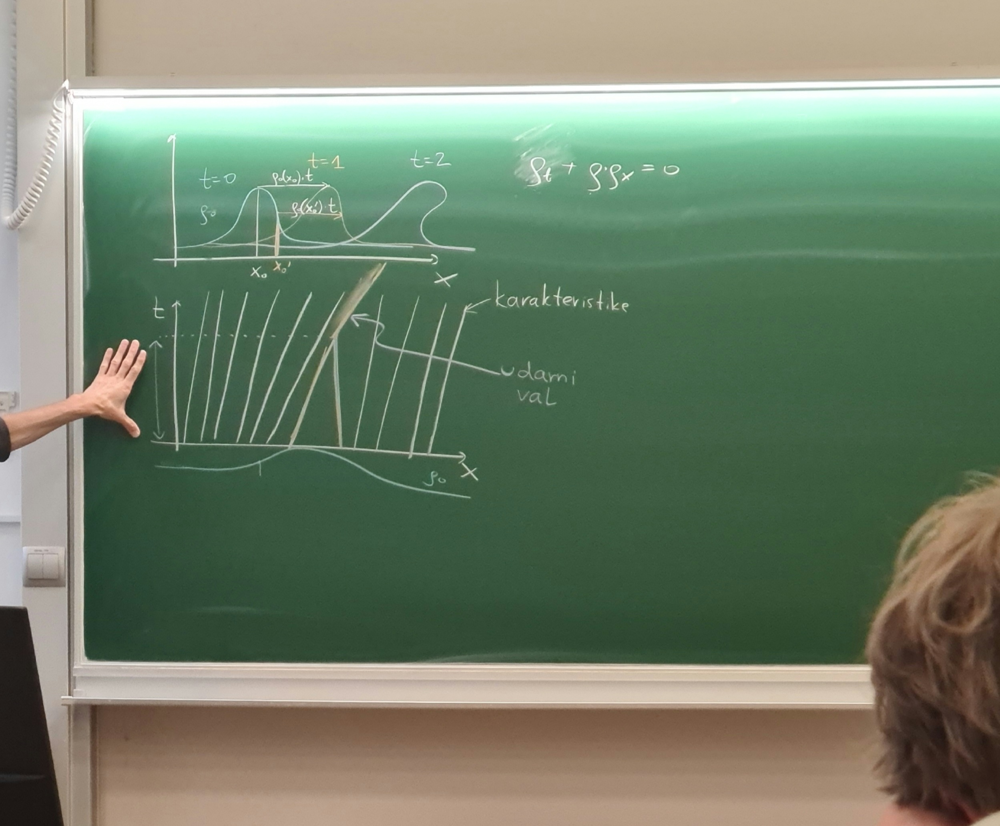
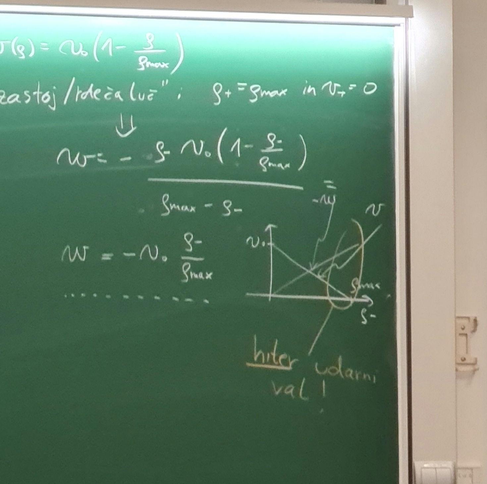
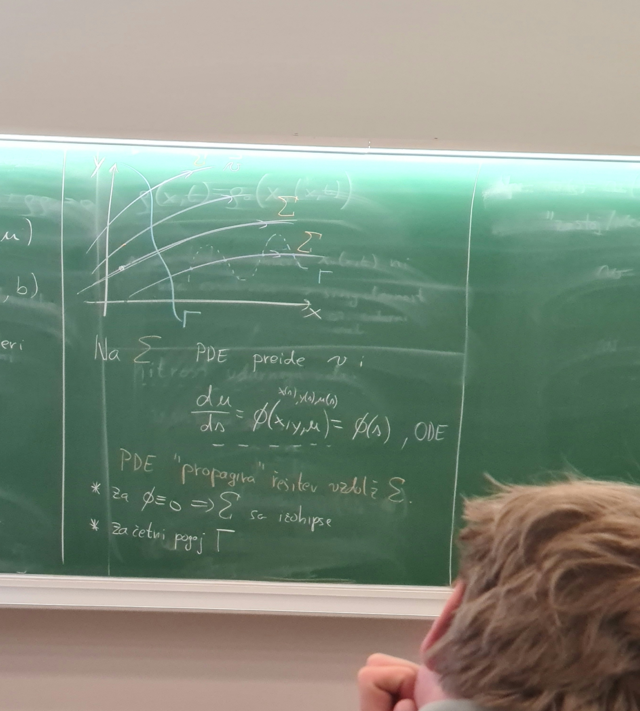
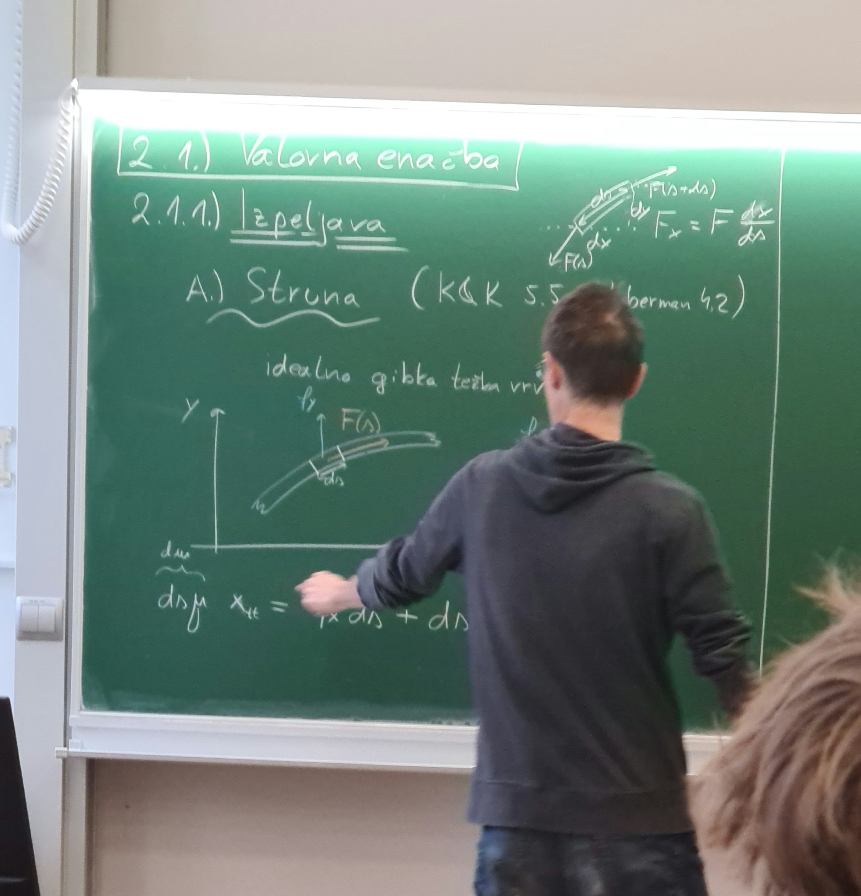

1. predavanje iz Matematične fizike 2
Table of Contents
1. Uvod
Zakaj, kje se pojavijo parcialne diferencialne enačbe? Gibanje enega delca opišemo z eno navadno difernencialno enačbo (ODE). Za opis gibanja dveh delcev imamo 2 sklopljeni ODE. Za opis gibanja neskončnega števila delcev imamo neskončno ODE. V kontinuumski limiti, ko iz diskretnih delcev preidemo na polje, dobimo PDE.
Za dobro definirano in enolično rešljivo PDE potrebujemo enačbo in začetne pogoje (ang. boundary conditions, označim BC).
Do PDE lahko pridemo tudi preko principa najmanjše akcije. Za 1 delec imamo Hamiltonian/Lagrangian, pri neskončnem številu delcev pa imamo integral po koordinatah. Pri Euler-Lagrangevih enačbah nimamo samo integrala po času, ampak tudi integral (lokalne) gostote. Tej lokalnosti pravimo fizikalno tudi kavzalnosti. E-L enačbe nam podajo PDE, ki so rešljive lokalno (?).
1.1. Kakšne PDE rešujemo?
Tako kot ODE imajo tudi PDE rede, ki nakazuje stopnjo najvišjega odvoda. Najenostavnejša PDE je 1. reda.
Kontinuitetna enačba, ki izraža nek ohranitveni zakon. Zanima nas, za katero količino je to diferencialna enačba - in zato potrebujemo zvezo med \( \rho \) in \( \vec{v} \).
Predpostavimo, da je ta zveza enaka \( \vec{\jmath} \sim \nabla \rho \), npr.
\begin{equation} \label{eq:2} j = - \frac{\partial \rho}{\partial x} \end{equation}Z združitvijo enačb \ref{eq:1} in \ref{eq:2} dobimo PDE 2. reda. Ciljali bomo na aproksimacijo, da so enačbe linearne (naravni zakoni, npr. Maxwellove enačbe, so eksaktno linearni). Prednost linearnosti je princip superpozicije.
Najpomembnejši primeri so:
valovna enačba je hiperbolična
\[ \nabla ^2 u = \frac{1}{c ^2} \frac{\partial ^2 }{\partial t ^2} u, \quad u \left( \vec{r}, t \right) \]
kjer je \( c \) hitrost valovanja.
Valovna enačba opisuje zvok, svetlobo, in ostala nihanja.
difuzijska enačba je parabolična
\[ \nabla ^2 u = \frac{1}{D} \frac{\partial u}{\partial t} \]
kjer je \( D \) difuzijska enačba.
Laplaceova enačba je eliptična
\[ \nabla ^2 u = 0 \]
Opazimo, da ne vsebuje odvoda po času.
2. PDE prvega reda (Kuščar, Kodre, poglavje 5.1, Haberman 12.2, Arfken 9.2)
Kot primer bomo vzeli prometne zastoje. Operiramo v eni dimenziji, in kontinuitetna enačba je
\begin{equation} \label{eq:3} \frac{\partial \rho}{\partial t} + \frac{\partial j}{\partial x} = 0 \end{equation}Na določenem, zaprtem intervalu, bo količina avtov, ki vstopajo na začetku intervala, enaka količino avtov, ki interval zapuščajo. Tok avtomobilov zapišemo s funkcijo
\begin{equation} \label{eq:4} j = f(\rho) = \rho v(\rho) \end{equation}kjer je \( v \) hitrost avtomobilov.
Odvod enačbe \ref{eq:4} po \( x \) zapišemo s posrednim odvajanjem
\[ \frac{\partial j}{\partial x} = \frac{\partial j}{\partial \rho} \frac{\partial \rho}{\partial x} = c (\rho) \frac{\partial \rho}{\partial x} \]
Količina \( c(\rho) \) je parameter, ki si ga izberemo. Upoštevajoč odvod \ref{eq:4} in \ref{eq:3} dobimo novo enačbo
\[ \frac{\partial \rho}{\partial t} + c \frac{\partial \rho}{\partial x} = 0 \]
Parameter \( c \) je hitrost premikanja razredčin in zgoščin, kar je lahko različno od hitrosti premikanja mikroskopskih delcev (avtov).
Če je avtocesta prazna, bodo avtomobili vozili ob neki konstantni hitrosti \( v_0 \). Več je avtomobilov, počasneje bodo vozili, kar pomeni, da hitrost v odvisnosti od gostote zapišemo
\[ v (\rho) = v_0 \left( 1 - \frac{\rho}{\rho_{max}} \right) \]
Če je cesta popolnoma polna, je hitrost \( 0 \). Naš približek je semi-dober.
Preko definicije \ref{eq:4} in definicije parametra \( c \), dobimo, da je hitrost motnje enaka
\[ c (\rho) = v_0 \left( 1 - \frac{2 \rho}{\rho_{max}} \right) \]
Upoštevajoč dobljen \( c \) enačba ni več linearna.
Za začetek si bomo ogledali linearen problem, kjer je hitrost motnje \( c = v_0 = konst \). Rešujemo enačbo
\[ \frac{\partial \rho}{\partial t} + v_0 \frac{\partial \rho}{\partial x} = 0 \]
Iščemo funkcijo \( \rho(x, t) \), ki velja za mirujoč opazovalni sistem. Recimo, da smo na vlaku, ki se premika kot \( x(t) \). Predpostavimo, da je gibanje linearno, torej
\begin{equation} \label{eq:5} x(t) = x_0 + vt \end{equation}Funkcija, ki jo sedaj iščemo, v premikajočem opazovalnem sistemu je \( \rho \left( x(t), t \right) \). Odvod po času je
\[ \frac{\mathrm{d} \rho }{\mathrm{d} t} = \frac{\partial \rho}{\partial t} + \frac{\partial \rho}{\partial x} \cdot \dot{x} \]
saj iščemo sistem, kjer se gostota ne spreminja. Vidimo, da je to sistem, ki ima hitrost \( \dot{x} = v_0 \)
\[ \frac{\mathrm{d} \rho}{\mathrm{d} t} = 0 \]
Z upoštevanjem začetnega pogoja \( \rho_0 (x) = \rho(x, t = 0) \) in transformacijo v prvotni koordinatni sistem preko \ref{eq:5} je gostota enaka
\[ \rho(x, t) = \rho_0 (x_0) = \rho_0 (x - v_0 t) \]
Uporabljali bomo sledečo notacijo. Totalni odvod po času bomo označili s piko, torej
\[ \dot{x} = \frac{\mathrm{d} x}{\mathrm{d} t} \]
Parcialni odvod po času bomo označili z indeksom \( t \), torej
\[ \frac{\partial u}{\partial t} = \partial_t u = u_t \]
kjer je \( u \) funkcija večih spremenljivk, ena od njih je čas.
Drugi odvod po kraju označimo z dvojnim \( x \), torej
\[ \frac{\partial ^2 }{\partial x ^2} = u_{xx } \]
Definiramo diferencialno enačbo za karakteristiko
\[ \frac{\mathrm{d} x}{\mathrm{d} t} = v_0 \]
Obravnavajmo zgornji primer, kjer je enačba nelinearna. Najlepšo linearnost bomo dosegli z \( c (\rho) = \rho \). Enačba, ki jo rešujemo je Burgerjeva enačba (ang. Burger’s equation)
\[ \frac{\partial \rho}{\partial t} + \rho \frac{\partial \rho}{\partial x} = 0 \]
Glej grafe: ob izbranem \( x_0 \) je gostota \( \rho_0 \), ki se iz časa \( t = 0 \) preslika v \( t = 1 \).

Ena karakteristika je oblike
\[ x = x_0 + \rho_0 (x_0) t \]
Graf \( x (t) \) prikazuje karakteristike, ki ni počesan (nima vzporednic). Naklon premic \( \frac{\mathrm{d} x}{\mathrm{d} t} \) (pazi graf je zasukan!) prikazujejo hitrosti/gostote \( \rho \).
Za dano začetno gostoto \( \rho_0 \) izrazimo karakteristiko \( x (x_0, t) \), katere izraz obrnemo, da dobimo odvisnost \( x_0 (x, t) \). Tako dobimo rešitev
\[ \rho(x, t) = \rho_0 (x_0 (x, t)) \]
Ne vemo, kakšne oblike je \( \rho_0 \) in je možno, da je odvisnost \( x_0 (x, t) \) težko izraziti.
Ob času na \( t = 2 \) oz. splošneje \( t > t_0 \) inverz \( x_0 (x, t) \) ni več enoličen in dobimo singularnost.
2.1. Hitrost udarnega vala
Naj bo udarni val imel hitrost \( w \). Avti pred udarnim valom naj imajo v mirujočem sistemu gostoto \( \rho_- \) in hitrost \( v_- \). Avti po udarnem valu pa imajo v istem sistemu gostoto \( \rho_+ \) ter \( v_+ \).
Velja, da je količina avtomobilov pred udarnim valom enaka količini avtomobilov po udarnem valu
\[ \tilde{\jmath}_- = \tilde{\jmath}_+ \]
v sistemu udarnega vala, ki se premika s hitrostjo \( w \). Naše hitrosti moramo preko Galilejeve transfomarcije pretvoriti v sistem udarnega vala
\[ \rho_- \left( v_- - w \right) = \rho_+ \left( v_+ - w \right) \]
iz česar izrazimo hitrost udarnega vala kot
\[ w = \frac{j_+ - j_{-} }{\rho_+ - \rho_-} = \frac{\rho_+ v_+ - \rho_- v_-}{\rho_+ - \rho_-} \]
Naj bo hitrost avtomobilov enaka odvisnosti kakor prej
\[ v \left( \rho \right) = v_0 \left( 1 - \frac{\rho}{\rho_{max}} \right) \]
Ob zastoju zaradi rdeče luči velja \( \rho_+ = \rho_{max} \) in \( v_+ = 0 \).
Hitrost motnje je tako
\[ w = - \frac{\rho_- v_0 \left( 1 - \frac{\rho_-}{\rho_{max}} \right)}{\rho_{max} - \rho_-} \]
oziroma, če poenostavimo
\[ w = - v_0 \frac{\rho_-}{\rho_{max}} \]
Če se avtomobili premikajo s hitrostjo \( 40 \mathrm{km}/ \mathrm{h} \) na avtocesti in se nekje ustavijo, ter je gostota \( \rho_- \) približno enaka \( \rho_{max} \), potem to pomeni, da se bo udarni val širil nazaj s hitrostjo \( v_0 = 120 \frac{\mathrm{km}}{\mathrm{h}} \).
To je tudi razlog, zakaj prihaja do naletov.

3. Splošna PDE 1. reda
Rešujemo enačbo oblike
\begin{equation} \label{eq:6} a(x, y) u_x + b(x, y) u_y = \phi(x, y, u) \end{equation}kjer je \( u = u(x, y) \).
Enačba je nelinearna, saj je \( \phi \propto u \).
Zapišemo vektorsko polje \( \vec{v} = (a, b) \) in tako lahko enačbo \ref{eq:6} zapišemo z vektorskim poljem
\[ \left( \vec{v} \, \nabla \right) u = \phi \]

Podobno kot v prejšnjem poglavju poskušamo z metodo karakteristike - ali obstaja krivulja \( \left( x(s), y(s) \right) \), na kateri se PDE poenostavi (na \( \phi = 9 \))?
Če najdemo pravilen zapis odvod funkcije \( u \) po \( s \), bo to našo enačbo pretvorilo v iz PDE v NDE.
Po definiciji verižnega pravila je odvod po \( s \) enak
\begin{equation} \label{eq:7} \frac{\mathrm{d} u}{\mathrm{d} s} = u_x \frac{\mathrm{d} x}{\mathrm{d} s} + u_y \frac{\mathrm{d} y}{\mathrm{d} s} \end{equation}\ref{eq:7} mora biti enak levi strani \ref{eq:6}, kar pomeni, da mora veljati
\begin{equation} \label{eq:8} \frac{\mathrm{d} x}{\mathrm{d} s} = a \quad \text{in} \quad \frac{\mathrm{d} y}{\mathrm{d} s} = b \end{equation}Enačba \ref{eq:8} je enačba za karakteristiko. Karakteristike kažejo v smeri vektorskega polja \( \vec{v} \), kar pomeni, da so črte vektorskega polje karakteristike. Za izbrano karakteristiko \( \Sigma \) PDE preide v
\[ \frac{\mathrm{d} u}{\mathrm{d} s} = \phi (x, y, u) = \phi(s) \]
kar pa je ODE. Rečemo, da PDE propagira rešitev vzdolž \( \Sigma \).
Če je \( \phi = 0 \), to pomeni, da so posledično \( \Sigma \) izohipse.
Predpostavimo, da imamo začetni pogoj \( \Gamma \). Za dober začetni pogoj mora sekati vse karakteristike in vsako karakteristiko samo enkrat (črtkana črta na sliki je slab začetni pogoj).
4. Valovna enačba
4.1. Izpeljava
4.1.1. Struna (Kuščar, Kodre 5.5, Haberman 4.2)
Naj bo vrv težka in idealno gibka. Idealno gibka pomeni, da za zvijanje vrvi ne uporabimo nič energije. Gledamo košček vrvi dolžine \( \mathrm{d} s \).

Definiramo dolžinsko gostoto zunanjih sil v \( x \) in \( y \) smeri kot
\[ f_i = \frac{\mathrm{d} F_{i}}{\mathrm{d} s} \]
kjer je \( i = x, y \). Dolžinska gostota mase pa je definirana kot
\[ \mu = \frac{\mathrm{d} m}{\mathrm{d} s} \]
Sila v vrvici \( F = F(s) \) (je odvisna od dolžine).
Zapišimo Newtonove zakone v posameznih smereh. Glej sliko.
Začetni del vrvi doživlja silo \( F(s) \), konec končka vrvi pa silo \( F(s + \mathrm{d} s) \). Na vrvico v smeri \( x \) deluje dolžinska gostota sile \( f_x \), hkrati pa še razlika \( F_x \), kar je razlika \( F(s + \mathrm{d} s) - F(s) \) projecirana na \( x \) os.
\( \mathrm{d}s \) je hipotenuza, medtem ko sta \( \mathrm{d} x \) in \( \mathrm{d} y \) kateti. Silo \( F_x \) zapišemo s kosinusom kot
\[ F_x = F \frac{\mathrm{d} x}{\mathrm{d} s} \]
Projekcijo razlike sil pa izrazimo z odvodom kot
\[ F(s + \mathrm{d} s) - F(s) = \frac{\partial }{\partial s} \left( F_x \right) = \frac{\partial }{\partial s} \left( F \frac{\mathrm{d} x}{\mathrm{d} s} \right) \]
Drugi Newtonov zakon v \( x \) osi zapišemo kot
\[ \mathrm{d} s \mu x_{tt } = f_x \mathrm{d} s ++ \mathrm{d} s \frac{\partial }{\partial s} \left( F \frac{\mathrm{d} x}{\mathrm{d} x} \right) \]
V obeh smereh tako zapišemo
\begin{align*} \mu x_{tt } &= \frac{\partial }{\partial s} \left( F(s) \frac{\mathrm{d} x}{\mathrm{d} s} \right) + f_x \\ \mu y_{tt } &= \frac{\partial }{\partial s} \left( F(s) \frac{\mathrm{d} y}{\mathrm{d} s} \right) + f_y \end{align*}Manjka nam še pogoj, da je vrv neraztegljiva, ki ga opišemo z
\[ \mathrm{d} x ^2 + \mathrm{d} y ^2 = \mathrm{d} s ^2 \quad \text{ali} \quad \left| \frac{\mathrm{d} \vec{r}}{\mathrm{d} s} \right| = 1 \]
Ta pogoj velja za \( F(s) \). Za raztegljivo vrv bo pogoj oblike.
\[ F\sim k \left( \left| \frac{\mathrm{d} \vec{r}}{\mathrm{d} s} \right| - 1\right) \]
Obravnavamo posebni primer, ko imamo majhni odkloni, kar matematično zapišemo kot
\[ \frac{\mathrm{d} y}{\mathrm{d} s} \ll 1 \quad \text{oz.} \frac{\mathrm{d} x}{\mathrm{d} s} \approx 1 \]
Dodatno nimamo zunanjih sil \( f_x = 0 \) ter da vrv ne pospešuje v \( x \) smeri: \( x_{tt } = 0 \). Iz Newtonovega zakona v smeri \( x \) in zdajle povedanih pogojev sledi, da je \( F(s) = \mathrm{konst} \), saj
\[ \frac{\partial F}{\partial s} = 0 \]
Newtonov zakon v smeri \( y \) pa je tako
\[ \mu y_{tt } = F \frac{\partial ^2 y }{\partial x ^2} + f_y \]
kar zapišemo v valovno enačbo
\begin{equation} \label{eq:9} y_{tt } = c ^2 y_{xx } + \frac{f_y}{\mu}, \quad \frac{F}{\mu} = c ^2 \end{equation}Stacionarna rešitev parabole je aproksimacije verižnice \( \mathrm{ch} \).
Pri mostu (npr. Golden Gate Bridge) je obremenitev konstanta na \( \mathrm{d}x \) in ne na \( \mathrm{d} s \).
- Energija nihanja za \( y_{tt } = c ^2 y_{xx } \)
Funkcija \( y \) je funkcija \( x \) in \( t \). Zaradi pogoja \( \frac{\mathrm{d} y}{\mathrm{d} s} \ll 1 \) zapišemo maso kot
\[ \mathrm{d} m = \mu \mathrm{d} s = \mu \mathrm{d} x \]
Kinetični del energije zapišemo kot integral po dolžini vrvi
\begin{equation} \label{eq:10} T = \int\limits_{}^{} \mu \mathrm{d} x \, \frac{y_t ^2}{2} \end{equation}Energiji dodamo tudi prožnostno energijo
\begin{equation} \label{eq:11} W_{Pr} = \frac{1}{2} \int\limits_{}^{} F y_x ^2 \, \mathrm{d} x \end{equation}kjer smo \( y_x ^2 \) dobili iz Taylorjevega razvoja
\begin{align*} \mathrm{d} s &= \sqrt{\mathrm{d} x ^2 + \mathrm{d} y ^2} \\ &= \mathrm{d} x \sqrt{1 - \left( \frac{\mathrm{d} y}{\mathrm{d}x} \right) ^2} \\ &= \mathrm{d} x \left( 1 + \frac{1}{2} \left( \frac{\mathrm{d} y}{\mathrm{d} x} \right) ^2 + \ldots \right) \end{align*}Zanima nas tudi delo
\begin{equation} \label{eq:12} A = \int\limits_{}^{} \left( \frac{\mathrm{d} F_{y}}{\mathrm{d} x} \right) \, \mathrm{d} x \, \mathrm{d} u \end{equation}kjer zapišemo \( u = \beta y \) za \( \beta \in (0, 1] \) obliko strune (od ravnovnesnega stanja do maksimalne lege). \( \beta \) je skalirni element. Majhni del oblike strune je \( \mathrm{d} u = y \mathrm{d} \beta \). Sila \( F_y \) je sila, ki sili vrv v ravnovesno lego. Zapišemo jo s pomočjo Newtonovega zakona
\[ \mathrm{d} x \mu y_{tt } = \mathrm{d} F_y = \left( F y_{xx } + f_y \right) \, \mathrm{d} x \]
kjer je \( f_y \) zunanja sila (sila teže).
Integral \ref{eq:12} tako postane
\begin{align*} A &= \int\limits_{}^{} \left( \frac{\mathrm{d} F_y}{\mathrm{d} x} \right) \, \mathrm{d} x \, \mathrm{d} u \\ &= \iint\limits_0^1 \left( \beta F y_{xx } + f_y \right)\, \mathrm{d} x \cdot y \, \mathrm{d} \beta \\ &= \int\limits_{}^{} \, \mathrm{d} x \left[ \frac{1}{2} F y_{xx } + f_y \right] y \end{align*}